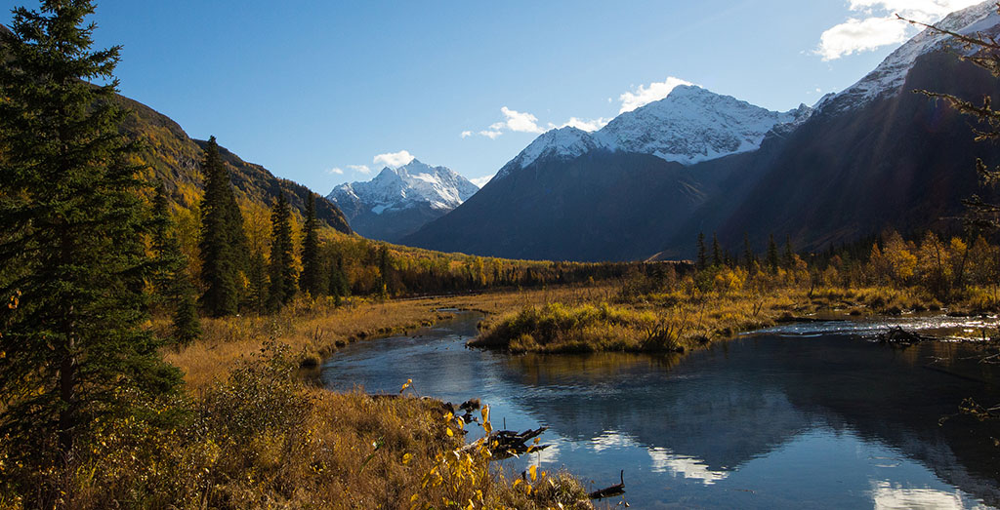

utenstat.no
utenstat.noAnarkisme er ikke liberalisme
8. mars 2015 | Sondre Bjellås
Det er ikke slik at anarkisme er en høyre-orientert politikk eller har noen særlig relasjon med liberalisme. Mange tror dette og forventer at liberalister og anarkister skal samarbeide og har elementer i sine filosofier som er likestilte. På overflaten kan det se slik ut, men det er helt feil.

Nå er det mange retninger av anarkisme, jeg kan ikke skrive for noen andre enn meg selv. Noe av årsaken til forvirring med relasjon med liberalismen, er den anarkistiske retningen anarkokapitalisme, som har tekster og forklaringer på hvordan oppnå en fullstendig privat ordning for lov og orden.
Liberalister ønsker en rettsstat, de fleste ønsker å finansiere denne med tvang, altså trusler om vold og utøvelse av vold ovenfor de som ikke bidrar.
Enkelte få liberalister påstår de ønsker at rettsstaten skal finansieres med frivillig donasjoner, men jeg har så langt aldri møtt en liberalister som gir frivillige donasjoner til å forbedre et politi som har alvorlige ressursmangler idag. Jeg har spurt flere. Hvis et menneske har en filosofi i livet sitt, som man selv ikke følger, bør man være varsom med å akseptere budskapet.
Det er dette felles ønsket om en rettsstat som forvirrer mange. De aller fleste mennesker ønsker å bo i en relativ stabil rettstat, dette er ikke noe unikt for anarkokapitalister eller liberalister. Men anarkisme er absolutt ikke liberalisme og har lite til felles.
Voluntaryism og anarkokapitalisme er nesten synonymer, og jeg bruker voluntaryism i resten av denne teksten. Det finnes pr. i dag ikke et norsk ord for dette begrepet.
Voluntaryism er prinsippet om at alle interaksjoner mellom mennesker bør og skal være frivillige. Det betyr at man frivillig inngår avtaler for alt i livet, inkludert lover og regler. Hvis du er på besøk hos din nabo, er det din nabo som eier eiendommen og bestemmer reglene i huset. Hvis det ikke er lov å knuse alle glass i skapet, da må du akseptere denne regelen når du kommer over på eiendom til din nabo.
Å bo i samfunn med andre, betyr at man må ofre noen av friheten man har på egen eiendom og fra naturens siden. Felleskap kan gi nye friheter, man normalt ikke har når man står alene. Forskjellen mellom politikk og voluntaryism, er at hvert individ skal ha muligheten til å selv velge felleskap. Liberalister, sosialister og andre tror de er mye smartere enn deg og ønsker å styre ditt liv. De tror de vet mye bedre, og de søker maktposisjoner som gjør det mulig å styre over deg og dine.
Liberalister mener de har den rette oppskriften for lover og regler. De ønsker å legge deg i håndjern og skyte deg hvis du er motvillig mot deres «rette oppskrift».
Voluntaryister forstår virkeligheten bedre enn liberalister. Voluntaryister forstår godt at ingen kan vite hva som er en optimal løsning for å organisere samfunnet. Vi må gjøre forsøk, og feile, for å finne optimale løsninger.
Voluntaryister aksepterer at hvem som helst som ønsker sine lover og reguleringer, kan gå sammen i et samfunn og håndheve sitt regelverk.
(Foto av Doug Brown)